计算机系统 II ¶
硬件 Week1 - 6 ¶
Review Week1¶
Why not single-cycle?
- longest delay determines clock period
- waste of area(e.g. mul need to use ALU repeatedly)
Why not multi-cycle?
- even longer time (longer than single-cycle)
- a new perspective:finer-grained
ISA:stack,accumulator,register(register-memory),register(load-store)
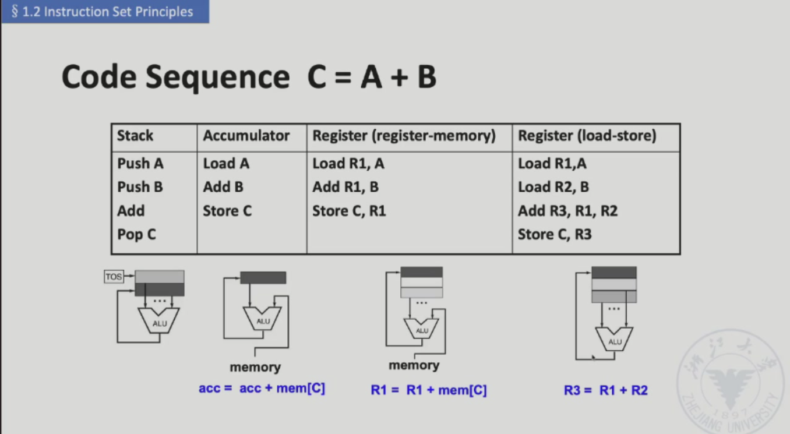
practice:D = A * B - (A + C * B)
| GAS | |
|---|---|
1 2 3 4 5 6 7 8 9 10 11 12 13 14 15 16 17 18 19 20 21 22 23 24 25 26 27 28 29 30 31 32 33 34 | |
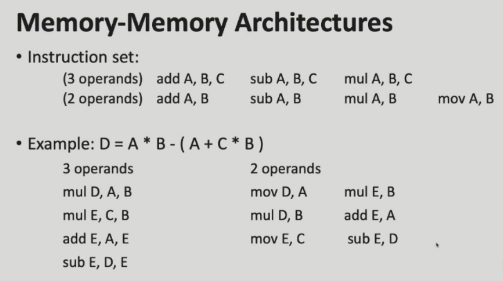
不同操作数的数目意味着不同的指令数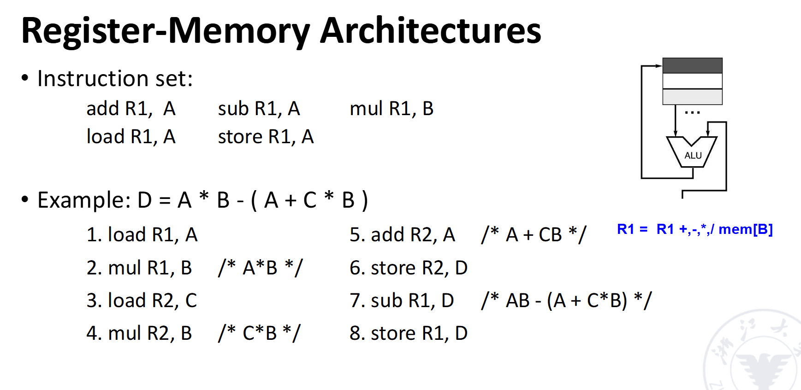
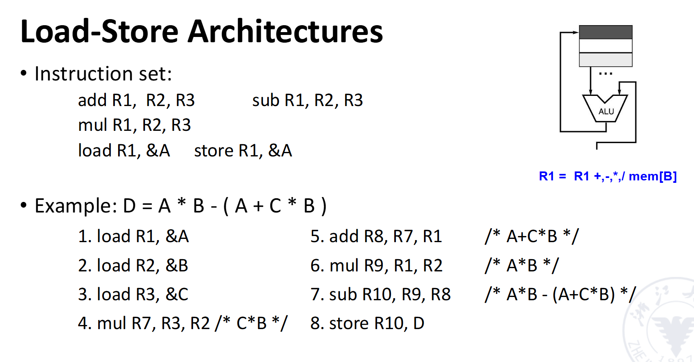
优化 CPU：
减少指令条数（CISC一条指令蕴含操作更多）
使用带累加器的 GPR：更快更便捷
取址模式：立即数寻址、寄存器寻址、基于偏移的内存寻址
内存寻址：排列（小端序RISC-V，大端序）、对齐（不对齐可能需要多次访存操作）
| GAS | |
|---|---|
1 2 3 4 5 | |
jalr x3( 效果同 jal 的 x1),x1( 基地址 编码空间 jal 只能跳转 32-5-7=20 位，x1 用于跳转到更大的范围 ),offset
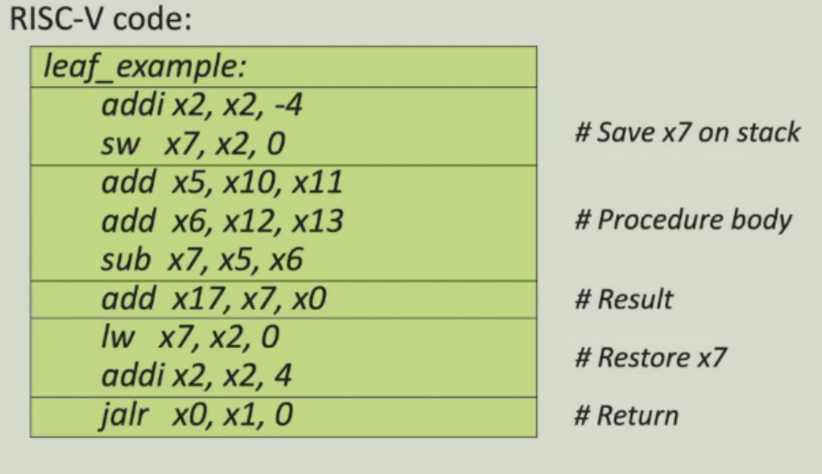
执行前有要保证x7的值不变，以免外部程序调用时出错为了状态保存，有两种寄存器保存方法：caller saving(可能需要保存所有寄存器)/callee saving(从函数的声明可知所需的寄存器)
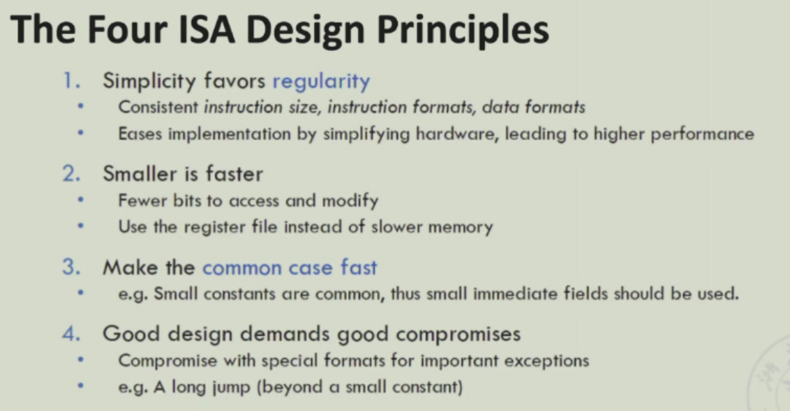
流水线 Week2 - 6 ¶
流水线基础 Week2 - 3 ¶
1. 流水线：co-use dependent function areas
average:faster
individual:slower for queueing
IF ID EX(ALU)
sequential execution:IFK IDK EXK IFK+1 IDK+1 EXK+1
优点：容易实现，器件更少(不会发生冲突)
overlapping execution:
tIF = tID = tEX = Δt
execute time for n instructions:
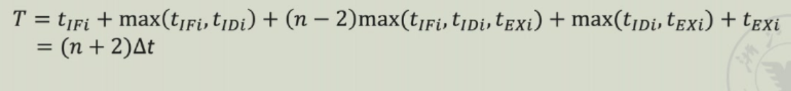
优点：快，器件利用率提高单重叠（执行第 k 条指令的同时 fetch 第 k+1 条
优点：节省1/3的时间；提高利用率
缺点：添加寄存器，控制硬件与逻辑更复杂
双重叠：T = (n+2)Δt
优点：节省2/3的时间；提高利用率
缺点：硬件进一步增加；必须将fetch,decode,execute完全分开
假设：IF + ID = EX
单重叠: T = (n+1)Δt
=> 阶段划分的合理性(非RISC-V)(RISC-V中，IF很慢，因为需要访问寄存器)
流水线：基于重叠执行的扩展（冒险）
子过程：stages/segments
深度depth：the number of segments（指令执行的条数）
space-time图
多周期的实际执行时间＞单周期，但其实现思路可以借鉴到pipelining
性质：
(1)划分子过程，每个阶段有对应的功能模块实现
(2)每个阶段的时长要尽可能相等以确保效率，瓶颈bottleneck：最长的阶段，决定时钟周期
(3)每个阶段的功能块需要一个buffer register（缓存寄存器/流水线的阶段间寄存器）在下一个时钟周期来临前存储这一阶段数据
(4)适用范围：大量重新执行过程；充满
(5)pass time:进入时间（从开始到充满） empty time:排空时间（从充满到全部执行完）
分类：
(1)单功能与多功能（功能：加减乘除与或非）
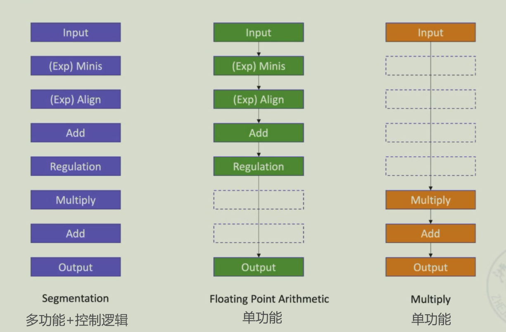
(2)静态流水线与动态流水线（都是多功能流水线）静态：单一时间只能完成一个功能
动态：前一功能未执行完就可 以执行另一功能的操作
灵活，效率高；但冲突，控制逻辑复杂
(3)算术逻辑操作层流水component level，指令层流水processor level，跨处理器流水inter processor level
(4)线性与非线性：feedback loop 指令执行过程中，数据流动是否存在回环（器件重复利用）
非线性流水线需要调度以避免冲突/调度表
(5)循序与乱序：指令结束的顺序是否与进入的顺序相同
(6)标量处理器与矢量处理器：处理器是否包含矢量表征与矢量指令，e.g.GPU
2. 流水线的实现 :
IF,ID,EX,MEM,WB
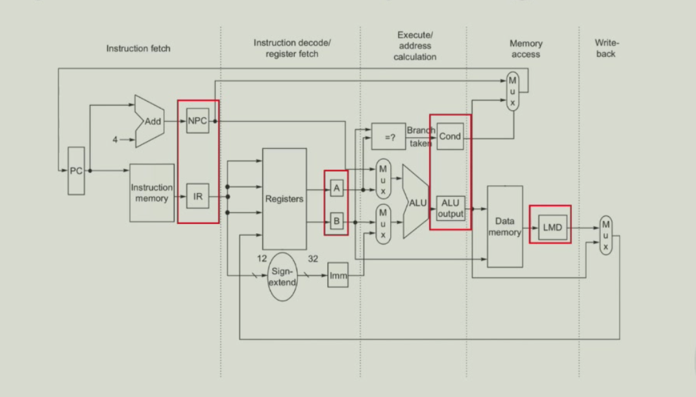
IR:取出的指令NPC：PC + 4（后续阶段使用）PC的分支跳转（提前）
A,B:寄存器操作数
=?:ALU_0SEL
ALUoutput:数据/地址
Cond：控制信号
LMD：取址结果
3. 流水线的效率：绝对性能——时间、相对性能——对比单周期 CPU
时钟周期：单周期（最长指令）、流水线（最长阶段）
n条指令的执行时间
量化指标：
(1)Throughput吞吐量:单位时间执行的指令条数
\(TP = \frac{n}{T} < TP_{max}\)
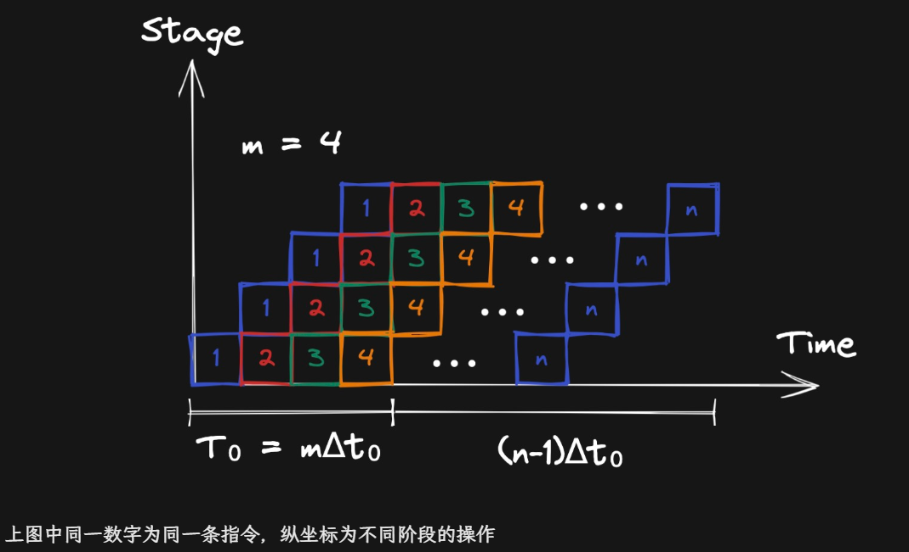
\(T = (m+n-1)*Δt_0\)
\(TP = \frac{n}{(m+n-1)*Δt_0}\)
\(TP_{max} = \frac{1}{Δt_0} = TP(n → ∞)\)
实际情况需要考虑瓶颈
e.g.
m = 4, s1,s3,s4:Δt, s2:3Δt
\(TP = \frac{n}{(3n+3)*Δt}\)
\(TP_{max} = \frac{1}{3Δt} = TP(n → ∞)\)
\(TP = \frac{n}{(m-1)Δt + nmax(Δt_1,Δt_2,...,Δt_m)}\)
提高吞吐量 / 解决瓶颈：
- subdivision:divide s2 into s2a,s2b,s2c
- repetition:s2:s2a,s2b,s2c
e.g.译码，一次可在寄存器取两个操作数rs1,rs2
(2)Speedup 加速比 >1：
\(Sp = \frac{ExecutionTime_{non-pipelined}}{ExecutionTime_{pipelined}}\)
\(ExecutionTime_{pipelined} ≈ \frac{ExecutionTime_{non-pipelined}}{NumberOfStages}\)
\(Sp = \frac{n*m*Δt_0}{(m+n-1)*Δt_0} = \frac{n*m}{m+n-1} = m (n >> m)\)
与流水线的时钟周期长度无关，只与流水线的深度和条数有关
(3)效率η
\(η = \frac{Sp}{m} = 1 (n >> m)\)
理解 : 时空图中格子占时间 * 空间面积的比值
why pipelining:
- decrease CPU time
- improve TP
- improve effiency for resources
ideal speedup = number of pipeline stages
too many stages:
- lots of complications
- should take care of possible dependecies among in-flight instructions
- huge control logic
what affects the efficiency of multi-functional pipeline
- segment in idle time for certain function
- idle segments when establishing
- clock cycle depends on the bottleneck segment
- needs emptied when switch
- output of last operation is the input of the next
- register delay & overhead of clock skew( 由布线长度和负载导致的顺序相邻寄存器的时钟信号到达时间之间的差异 )
4. 流水线实现的困难：
阶段执行时间不同造成时间浪费（尽量让各阶段时间长度相同）
冯诺依曼架构在内存访问时的冲突，MEM和IF阶段访问同一块memory
解决：哈佛架构/cache/instruction buffer（缓存）
流水线冒险 Week3 - 5 ¶
流水化设计：
回环：跳转地址（控制冲突）、写回（数据冲突）
加入阶段间寄存器共用基础组件
(1) 结构冒险 (Structural Hazard):a required resource( 硬件 ) is busy
冯诺依曼架构下，a single memory，data access & instruction fetch 在同一时钟周期同时访问内存
problem:two or more instructions compete for access to a single physical resource
solution1:stall(nop instruction(addi x0,x0,0))
solution2:add more hardware(can always solve structual hazard)
(2) 数据冒险 (Data Hazard):data dependency between instructions
| GAS | |
|---|---|
1 2 | |
solution1:stall(severely)
solution2:forwarding( 旁路 :ALU output->input of EX)
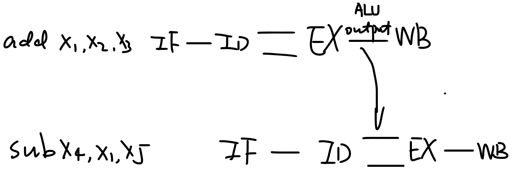
could not solve all the situation: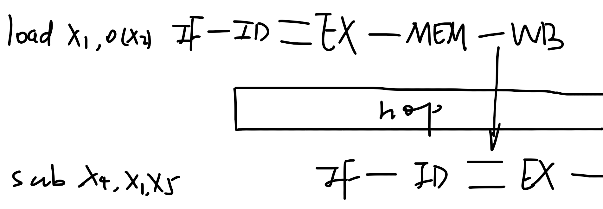
通过多路选择器引入<-多路选择器的控制信号<-冲突发生的条件条件：
(1)前两条操作的目的操作数 = 后两条操作的源操作数
(2)EX/MEM.RegWrite == 1：即前一条指令写入了寄存器
(3)EX/MEM.Rd != 0：即前一条指令写入的不是 x0（如果是 x0 则不会发生任何变化）
硬件实现:增加Forwarding unit
input rs1,rs2,rd,EX_MEM_rd,MEM_WB_rd
output ForwardA,ForwardB to Mux_ALU
双重冒险 double hazard
| GAS | |
|---|---|
1 2 3 | |
MEM hazard
- if(MEM/WB.RegWrite and (MEM/WB.Rd != 0))
and not(EX hazard)
and (MEM/WB.Rd == ID/EX.Rs1)
ForwardA = 01
Load-Use
| GAS | |
|---|---|
1 2 3 4 | |
建议在ID阶段进行，因为在EX阶段进行会需要和Forwarding unit前后进行，降低极限频率，不能交换Forwarding和hazard detection，因为二者有依赖关系
Load-Use hazard when ID/EX.MemRead and ((ID/EX.Rd == IF/ID.Rs1) or (ID/EX.Rd) == (IF/ID.Rs2))
then stall and insert bubble
硬件实现:增加Hazard detection unit
force ID_EX_control.signal = 0
prevent the update of PC and IF_ID_register
solution3:reorder code
(3) 控制冒险 (Control Hazard):flow of execution depends on previous instruction 执行流，取哪条址由前一指令确定 (b-type/j-type( 地址还未计算 ))
solution1: 将分支判断提前到 ID 阶段，再暂停
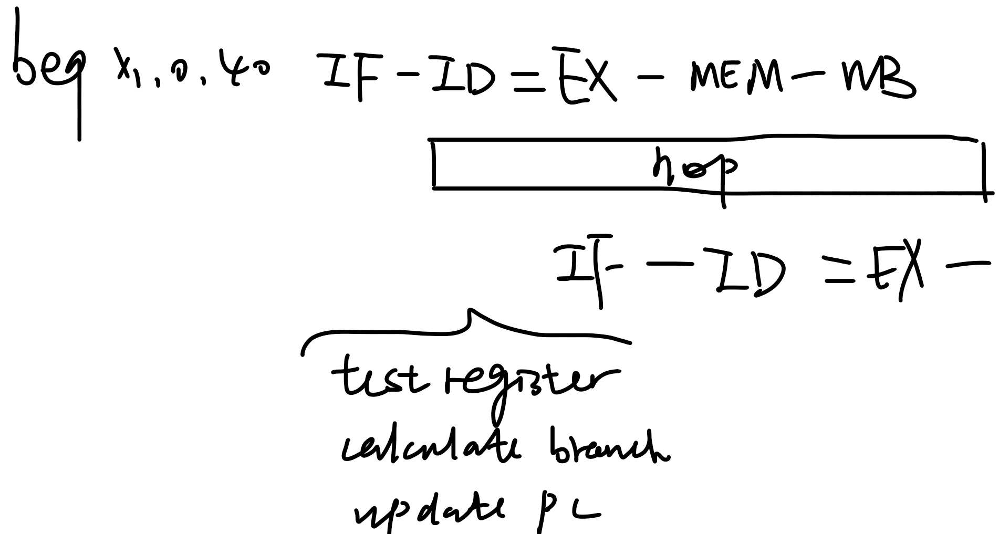
reduce stall
- compare registers & compute target
- add hardware in ID
why ID：no data in IF
产生了新的冲突
GAS 1 2 3 4
add x1,x2,x3 add x4,x5,x6 beq stalled beq x1,x4,dispcan solve by using forwarding (& stall)GAS 1 2 3 4
lw x1,addr beq stalled beq stalled beq x1,x0,disp
branch still causes a stall
现代CPU：10-15阶 stall penalty:5 time cycle - compute the branch target address
- judge if the branch process
- target address adder
- register comparator
solution2:prediction
贪心，预测不发生，继续取址
发生时：强制置0（变为nop，惩罚）
改进：predicts that some conditional branches will be untaken
经验总结/动态调整（历史记录）：
- branch prediction buffer(history table)
- indexed by recent instruction address
- outcome(taken or not)
solution3:dalayed decision
delay slot
b-type指令后空出一个指令放入不影响分支的指令
非线性流水线调度 ¶
线性与非线性流水线：是否存在回环
Task:->S1->S2->S3->S4->S2->S3->S4->S3->EXIT
调度:determine when to introduce a new task to the pipelining,so that the tasks will not conflict with each other
非线性流水线的规范表示：Reservation table
| 1 | 2 | 3 | 4 | 5 | 6 | 7 | |
|---|---|---|---|---|---|---|---|
| S1 | 1 | 1 | 1 | ||||
| S2 | 1 | 1 | |||||
| S3 | 1 | 1 | |||||
| S4 | 1 |
调度算法：
initial conflict vector -> update conflict vector -> state transition graph -> circular queue(回环) -> shortest average interval
禁止集(prohibit sets)：如果经过m个时钟周期进入指令会产生冲突，则m∈禁止集F
| 1 | 2 | 3 | 4 | 5 | 6 | 7 | 8 | 9 | |
|---|---|---|---|---|---|---|---|---|---|
| S1 | 1 | 1 | |||||||
| S2 | 1 | 1 | 1 | ||||||
| S3 | 1 | ||||||||
| S4 | 1 | 1 | |||||||
| S5 | 1 | 1 |
由表可知禁止集 F = {1,5,6,8}
初始冲突向量 C 0 = (10110001)( 由低到高的位对应禁止集中的数 )
更新冲突向量 (C N-1 C N-2 ...C i ...C 2 C 1 )
CCV = current conflict vector
| Interval | Initial | 2 | 2 | 7 |
|---|---|---|---|---|
| CCV | 10110001 | 10111101(00101100 | 10110001) | 10111111( 以下三个或 ) | 10110001 |
| 1-> | 10110001 | 00101100(10110001 >> 2) | 00001011 | 00000000 |
| 2-> | 10110001 | 00101100 | 00000000 | |
| 3-> | 10110001 | 00000001 | ||
| 4-> | 10110001 |
state transition graph
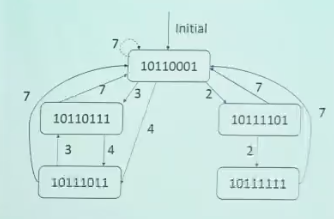
寻找回环（不一定回到初始状态，只要子图里有回环即可） 计算平均间隔：将circular queue相加除以指令个数
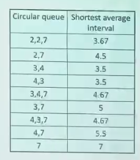
挑选平均间隔最短的即为最优调度方案
多发射 Multiple issue ¶
同一个时钟周期内发射多条指令
Instruction-Level Parallelism(ILP)
- Deeper pipeline
Less work per stage -> shorter clock cycle - Multiple issue
Replicate pipeline stages -> multiple pipelines
start multiple instructions per clock cycle
CPI < 1,so use instructions per cycle(IPC)
E.g. 4GHz 4-way multiple-issue 16BIPS,peak CPI = 0.25,peak IPC = 4 - dependencies reduce this in practice
使用场景：操作系统下的多任务执行（例：网易云音乐 & 微信 无信息传输）
- static multiple issue
compiler groups instructions to be issued together,packaging them into issue slots
静态指令调度 compiler detects and avoid hazards
e.g. the following instructions cannot be put into an issue slot
GAS 1 2 3
add x1,x2,x3 add x1,x1,x2 add x5,x1,x2 - dynamic multiple issue
CPU examines instruction stream and chooses instructions to issue
compiler can help by reordering (软硬协同)
CPU resolves hazards by using advanced techniques at runtime(运行时调节)
"Guess":start operation A.S.A.P;check whether the guess is right
branch:roll back if path taken is different
load:roll back if location is updated(miss in cache)
speculation
- compiler
reorder
"fix-up" instruction to recover wrong guess
- hardware
buffer results until it determines they are actually needed
flush buffers on incorrect speculations
two types of multiple-issue processor
- superscalar(general computing)
the number of instructions issued is not fixed(1-8,with upper limit)
the processor is called n-issue if the upper limit is n
- VLIW(Very Long Instruction Word)(digital signal processing/multimedia)
the number of instructions issued is fixed(4-16),constituting(拼接) a long instruction or an instruction packet
scheduling can be only done statically
super-pipeline
- subdivide each pipeline stage
- time cycle doesn't change,an instruction is issued every 1/n time cycle
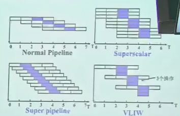
hazard detection in static scheduling
- hazard detection in outgoing package and select
- check conflicts during execution
1 integer instruction(load store branch) + 1 floating-point operation instruction(fp) - fetch 2 instructions from memory
- determine hazard
- send
hazard in dual-issue
EX data hazard
| Text Only | |
|---|---|
1 2 | |
load-use hazard
split into 2 not adjacent packets
e.g.
| GAS | |
|---|---|
1 2 3 4 5 | |
| ALU/branch | Load/Store | cycle | |
|---|---|---|---|
| Loop: | nop | ld | 1 |
| addi x20,x20,-8 | nop | 2 | |
| add x31,x31,x21 | nop | 3 | |
| blt x22,x20,Loop | sd x31,8(x20) | 4 |
IPC = 1.25(peak IPC = 2)
increase IPC,hazard mitigation:loop unrolling
- replicate loop body to expose more parallelism
- use different registers(register renaming)
limitation:
- Instruction-level parallelism inherent in the program
- difficulties in hardware implementation
- technical limitation
static -> dynamic
superscalar : transparent to the programmer(硬件兜底)
running time effect will be caused greatly by compiler's optimization
solution:
- execute instructions out of order but commit results to registers in order(buffer)
中断与 OS 基础 ¶
解决冲突：
- save PC
- supervision exception cause register(SCAUSE)
- jump
handler actions:
- read cause and transfer to relevant handler
- determine action required
- restartable
take correct action
use SEPC(used for saving PC) to return - otherwise
terminate
report error
in pipeline:
- control hazard
- mispredicted branch
multiple exceptions:deal with the earliest instruction
trap(soft interrupt): 软件产生，运行时错误 / 用户显式中断
OS is interrupt-driven
special interrupt:计时器中断 kernal介入管理
I/O 处理 :
用户：系统调用system call
操作系统：MMIO(Memory Mapping I/O)
同步I/O：进行 I/O 的时候 block 掉当前请求 I/O 的程序，等待 I/O 结束（可能会调度运行另一个程序）(常用)
异步I/O：即使 I/O 没有完成，仍然继续运行原程序，当 I/O 完成时，执行用户态定义的 callback 回调函数(高效)
DMA(Direct Memory Access): 搬运数据，完成后通过中断告诉 CPU，让 CPU 从无意义工作中解放，xPU(GPU MPU TPU) 访问内存都算 DMA
UMA：统一内存架构
两模式操作：
- user mode
- kernel mode
system call
- 通过 trap 转到内核态
- 在 kernel 执行指定操作
- 返回用户态
OS Week7 - 15¶
Introduction Week7¶
set up memory
Moore's law：ineffective due to heat emission
SMP system:symmetric multi processors
[Definition]resource abstractor and resource allocator
BIG for drivers
LibOS:只负责resource allocator
Multi-programming:allow multiple jobs to reside in memory simultaneously
Time-sharing:Multi-programming with rapid context-switching
fCPU=400fmemory=400000fdisk
The kernel is NOT a running programme,but executed when some event occurs/requested
kernel size:some memory size spent (10M)
- lean nothing-more
- mean single-minded
hardware -> protected inst -> OS
non-hardware -> unprotected inst -> OS/app
OS -> kernel mode
app -> user mode
determine inst when decoding,raise trap is privileged inst and mode == user
start in kernel mode
bootstrap program (bootloader)stored in Read Only Memory(ROM)
RISC-V modes
- 00 user/app U
- 01 supervisor S
- 10 reserved
- 11 machine M
Event:an "unusual" change in control flow
stop execution -> change mode -> change context
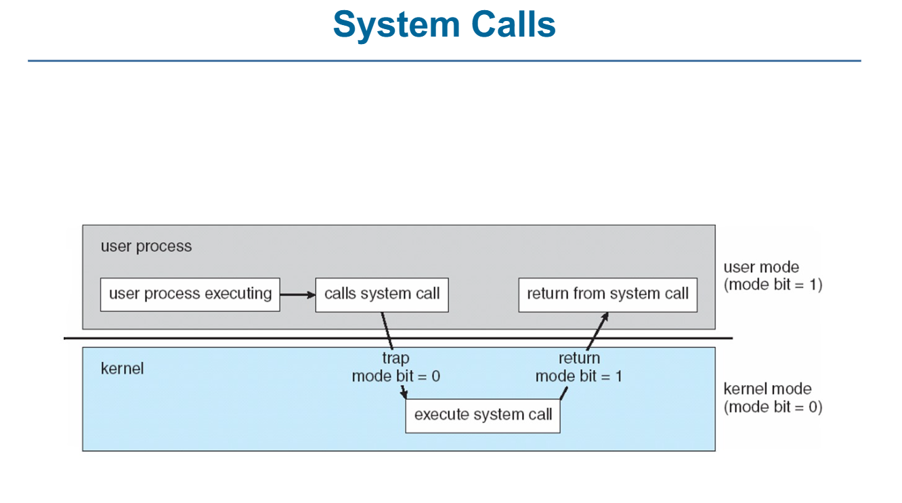
a handler for each event type:interrupts(hardware) & exceptions(traps)(software) "processEvent()"
system call
[Definition]a special kind of trap when a user program need to do something privileged
svc(supervisor call) hvc(hypervisor call) smc(secure monitor call)
timers
The timer interrupts the computer regularly
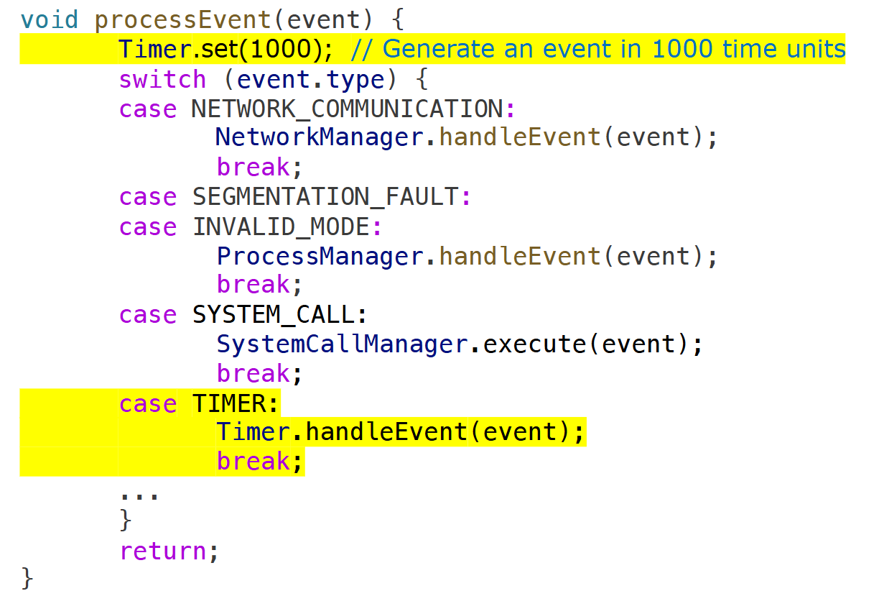
OS services
- process management
- memory management
- storage management
- I/O management
- protection and security
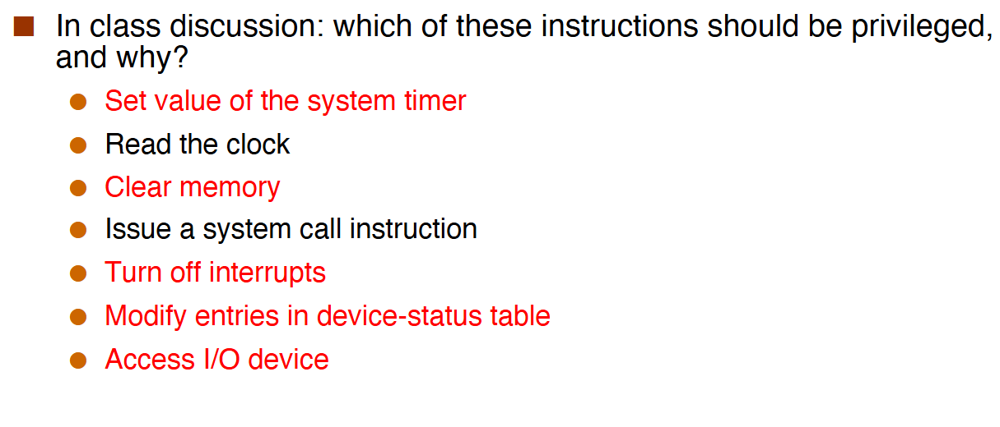
OS Structures Week8 - 9¶
OS features:
helpful for users
- program execution
- I/O operation
- file systems
- communication
- error detection
operation and protection
- resource allocation
- accounting
- protection and security
interface
- GUI
- command line interface(CLI)
- Touchscreen
system call
Application programming interface(API)
syscall -> kernel space
1) kernel_entry:save register data
2) write
3) ret to user
syscall table(array):index = syscall No.
System-call interface
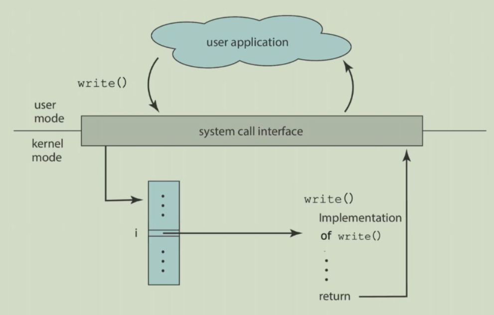
printf is a privileged instruction(link to device) => syscallcp a b
open and read
open and write
0 -> stdin
1 -> stdout
2 -> stderr
183 for small file
for large file more reads and writes since single read can only reach 130KB
种类一样，数量变多
parameter passing:register(like C)
syscall type
- process control( 分配内存资源 )
- file management
- device management
- information maintenance
- communications
system service
linkers and loaders
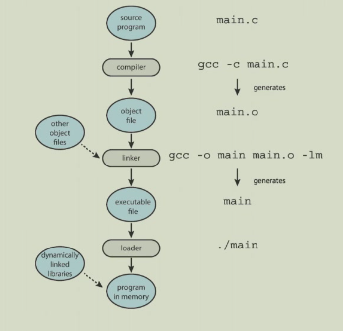
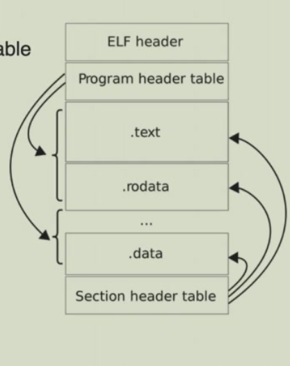
static variable -> .data(int a=5;)初始化
static const -> .rodata(read only)
int b; -> .bss未初始化 filled with 0
.text executable
static linking
- big file(x100 of dynamic linking)
- independent of the environment(less syscalls)
- no .interp section(loader-path)
- no memory mapping segment(dynamic libraries e.g./libc)
dynamic linking
- small file
- need loader resolve library calls
- can't execute without proper loader
Who setups ELF file mapping
Kernel
exec syscall
load_elf_binary
Who setups stack and heap
Kernel
exec syscall
Who setups libraries
Loader
ld-xxx
after ./a.out
entry point address->_start(static) loader(dynamic)
call<_libc_start_main>
statically-linked elf
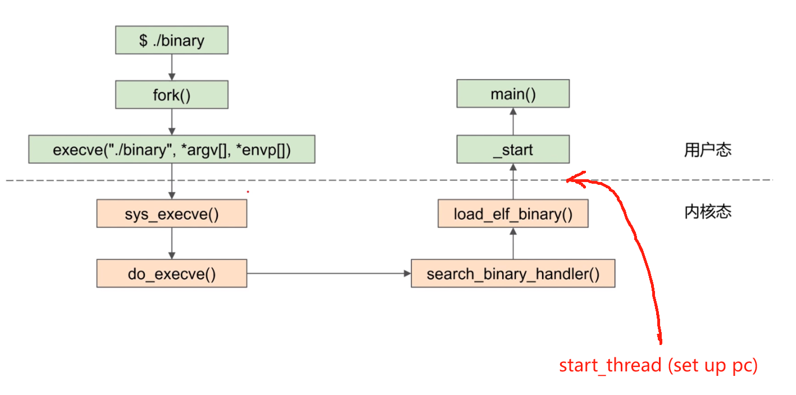
DYN:loader -> interp_elf_ex -> e_entry
STA:a.out_elf -> e_entry
dynamically-linked elf
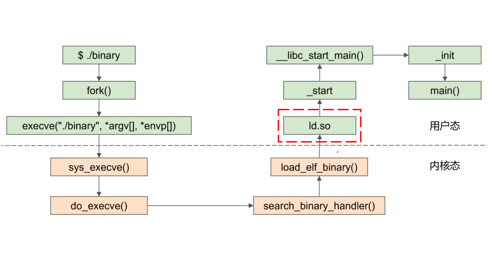
Policy:What will be done?
Mechanism:How to do it?
Separation of policy from mechanism
DOS:disk OS
LKM:loadable kernel module
Layered approach
Microkernels
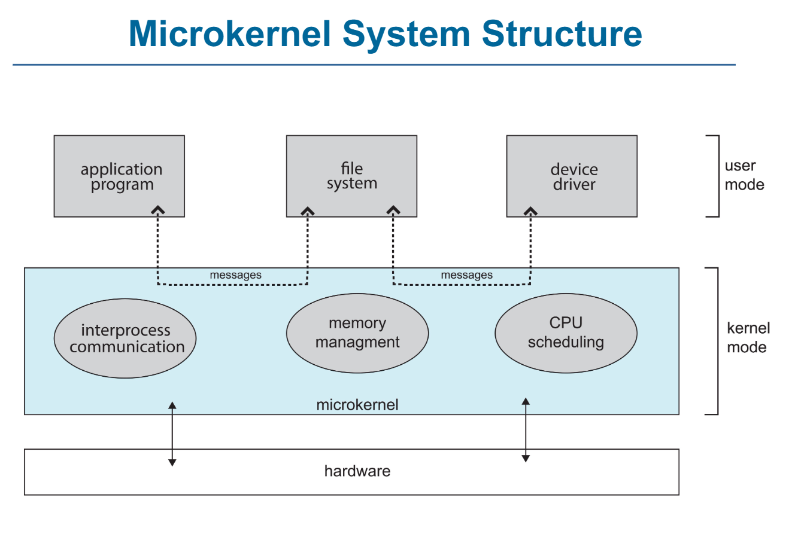
- benefits:
easier to extend
easier to port OS to new structure
more reliable(less code running in kernel)
more secure - detriments:
performance overhead of user space to kernel space communication
Hybrid systems 混合系统
read hello-lkm
Processes Week10 - 11¶
[Definition]a unit of resource allocation and protection
Process = code(text) + data section + program counter + registers + stack + heap
a unit of resource allocation and protection
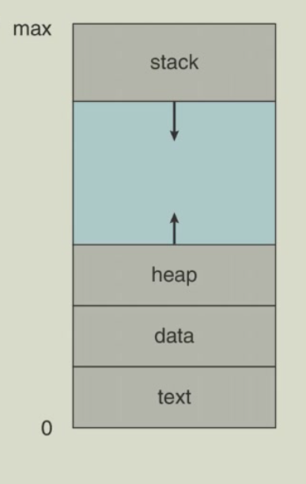
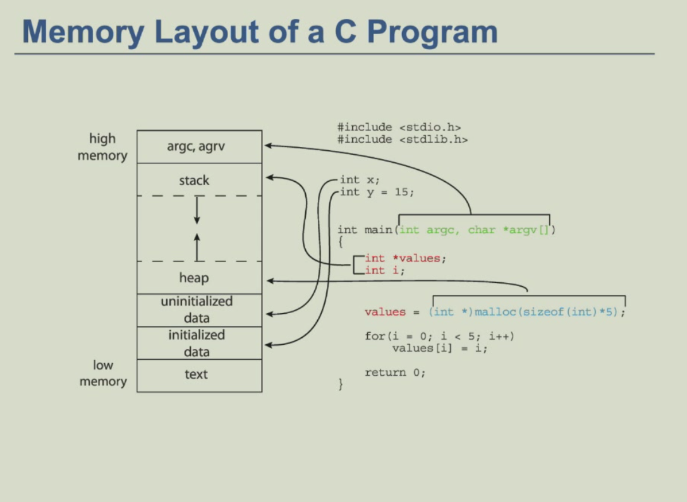
Single- and Multi-Tasking
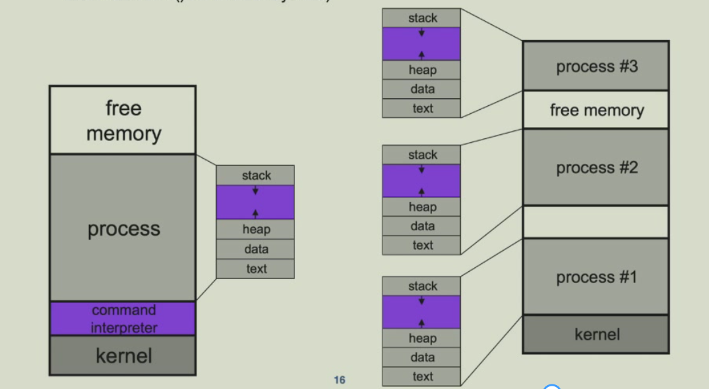
Process Control Block(PCB) 数组
| C | |
|---|---|
1 2 3 4 5 6 7 8 9 | |
填空
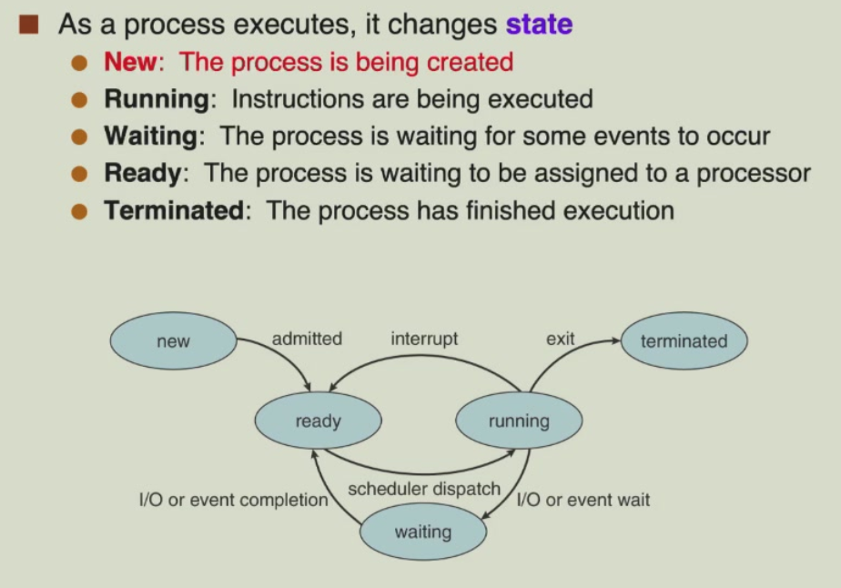
create -> pid = 0:swapper/idle
fork -> pid = 1:systemd -> all other processes
The child can be either a clone of its parent or a new one
new¶
fork()
child is a copy of the parent but a different pid and its resource utilization set to 0
returns the child's pid to the parent and 0 to the child
e.g.
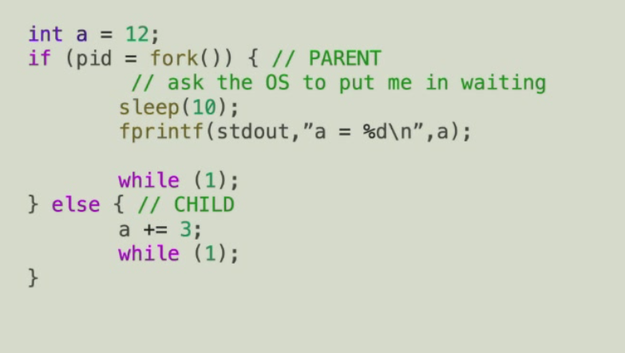
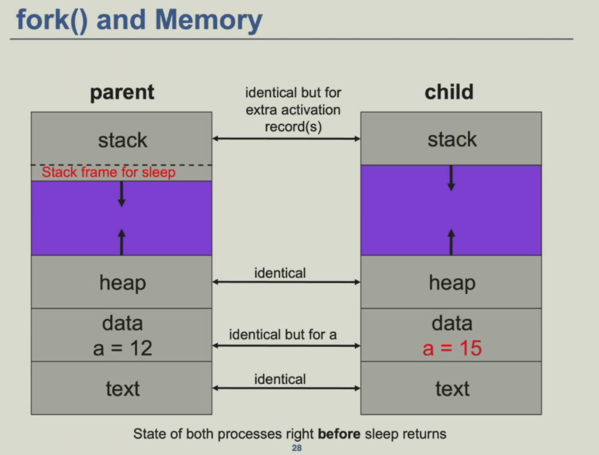
| C | |
|---|---|
1 2 3 4 5 | |
| C | |
|---|---|
1 2 3 4 5 6 7 8 | |
数数量
execve()(execute argv envp)
after a fork() replace the memory space with a new program
will not return unless an error occur
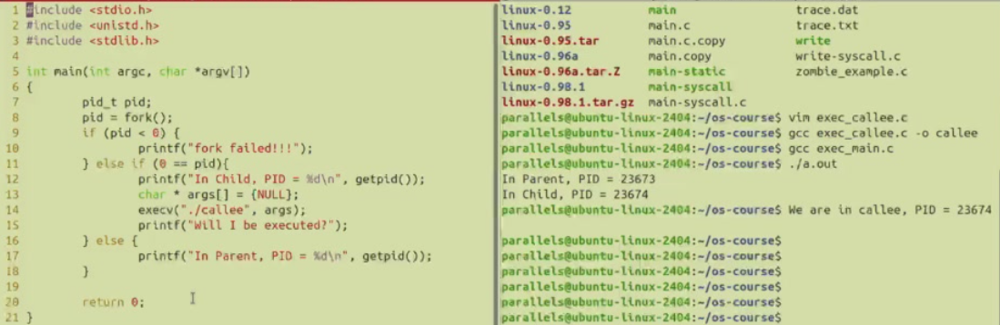
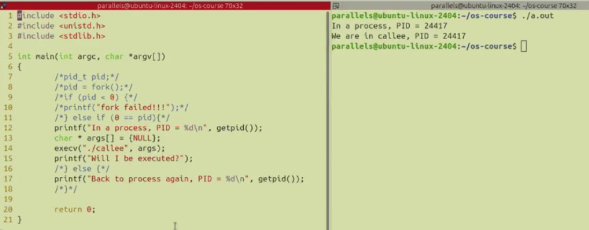
no_fork
ASLR: 地址随机化
exec会抹去当前进程的内容（无论是子进程还是父进程）
terminate¶
exit()
SIGINT can be handled
signal(SIGINT,my_handler)
SIGKILL & SIGSTOP:cannot be handled for safety
zombie:不占CPU，但仍使用内存，PCB cannot be deallocated except for the help of its parent
a zombie lingers on until:
- its parent calls wait()
- its parent dies
- a handler to SIGCHLD
orphan：adopted by systemd(pid = 1/1763)
no zombie orphan exists
ready running waiting¶
Ready queue and wait queues(list)
a queue for every waiting object
| C | |
|---|---|
1 2 3 4 5 | |
context:registers represented in the PCB
context switch:state saving
- time is overhead;the system does no useful work while switching
the more complex the OS and the PCB is, the longer the context switch - time-dependent on hardware support
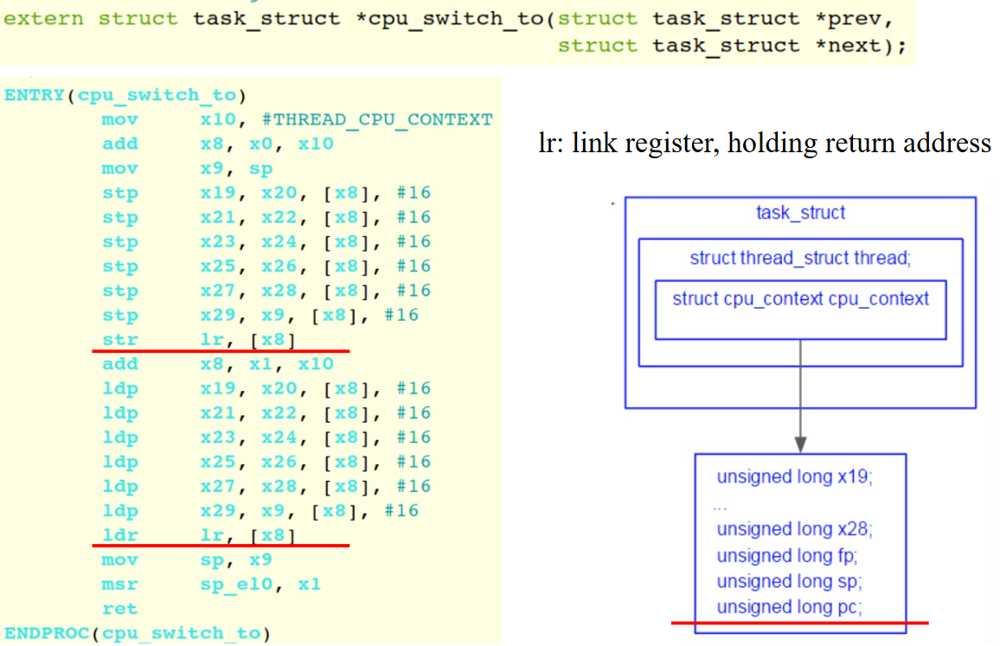
stp = store pair
x29 = fp
x9 = sp
x30 = lr = ra (pc = lr after ret)
#16 = x8 + 16
x0 = switch_caller_pcb_pointer
x1 = switch_callee_pcb_pointer
add x8,x0,x10(offset)
x8 = cpu_context
stack switch
| GAS | |
|---|---|
1 2 3 | |
code switch
str lr,[x8] ldr lr,[x8]中的 lr 分别是什么
lr -> pc0
pc1 -> lr
str lr,[x8]中的 lr 什么时候再被使用
| C | |
|---|---|
1 2 3 | |
C code is not permitted because of overhead or optimization(lean & mean)
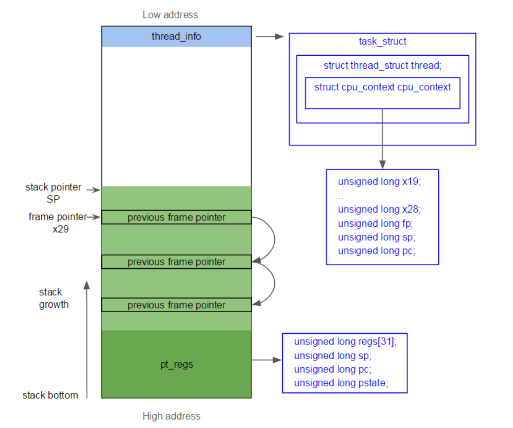
msr sp_e10,x1for safety(thread_info -> cred -> uid)(x1:task_struct)
When and where are the kernel context been saved?
- when:cpu_switch_to
- where:cpu_context in PCB
When and where are the user context been saved?(before (kernel)context switch)
context switch in kernel mode
- when:kernel_entry
- pt(process trees)_regs in per_thread kernel stack
kernel_space_context in PCB
user_space_context in pt_regs
user process -> call system call(kernel_entry)-> execute system call(kernel_exit)-> return
why fork() can return two values?
x0 store return_value in arm64
two x0 after clone
When does child process start to run and from where?
When forked, child is READY -> context switch to RUN
After context switch, run from ret_to_fork
ret_from_fork -> ret_to_user -> kernel_exit who restores the pt_regs
Scheduling Week11 - 12¶
[Definition] The decisions made by the OS to figure out which ready processes/threads should run and for how long
The policy is the scheduling strategy
The mechanism is the dispatcher
CPU-I/O burst cycle
- I/O bound
- CPU bound
non-preemptive scheduling:a process holds the CPU until it is willing to give it up
preemptive scheduling:a process can be preempted(抢占) before end of execution
scheduling decision points:
- RUNNING - WAITING
- RUNNING - READY
- WAITING - READY
- RUNNING - TERMINATED
- NEW - READY
- READY - WAITING
non-preemptive:1,3,4,5
preemptive:1,2,3,4,5
scheduling queue:
- Ready Queue:processes in ready state
- Device Queue:processes waiting for particular device
dispatch latency:time it takes for the dispatcher to stop one process and start another to run
criteria:
- CPU utilization
- throughput
- turnaround time
- waiting time
- response time
scheduling algorithm¶
First-Come,First-Served(FCFS)
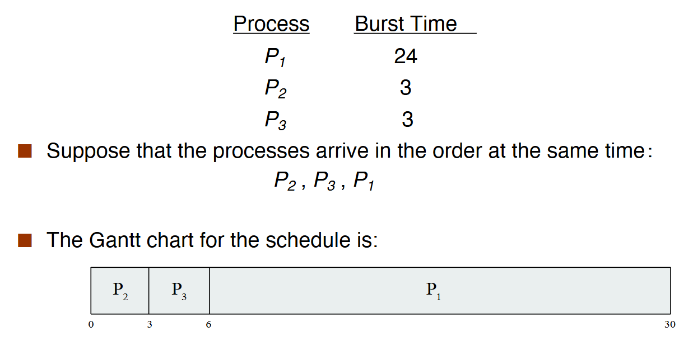
arrival time = 0.0
Waiting time = start time - arrival time
P1 = 6,P2 = 0,P3 = 3
average waiting time = (6 + 0 + 3)/3 = 3
Turnaround time = finish time - arrival time
P1 = 30,P2 = 3,P3 = 6
average turnaround time = (30 + 3 + 6)/3 = 13
Suppose the process arrive in the order:P1,P2,P3
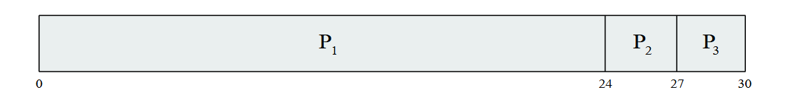
average waiting time = (0 + 24 + 27)/3 = 17
average turnaround time = (24 + 27 + 30) = 27
Convoy Effect:short process behind long process
Shortest-Job-First(SJF)
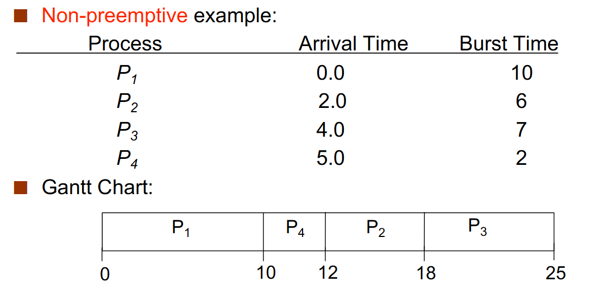
average waiting time = (10 + (12 - 2) + (18 - 4) + (10 - 5))/4 = 7.25
average turnaround time = (10 + (18 - 2) + (25 - 4) + (12 - 5))/4 = 13.5
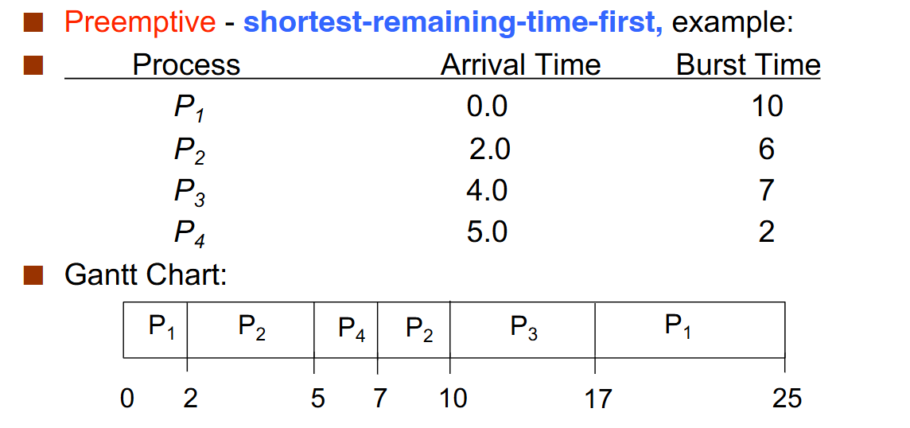
Be sure you can draw the Gantt Chart
average waiting time = ((17 - 2) + (7 - 5) + (10 - 4))/4 = 5.75
average turnaround time = (25 + (10 - 2) + (17 - 4) + (7 - 5))/4 = 12
SJF is optimal for average wait time
problem:we cannot know the burst duration beforehand
CPU burst duration prediction
base on previous CPU bursts
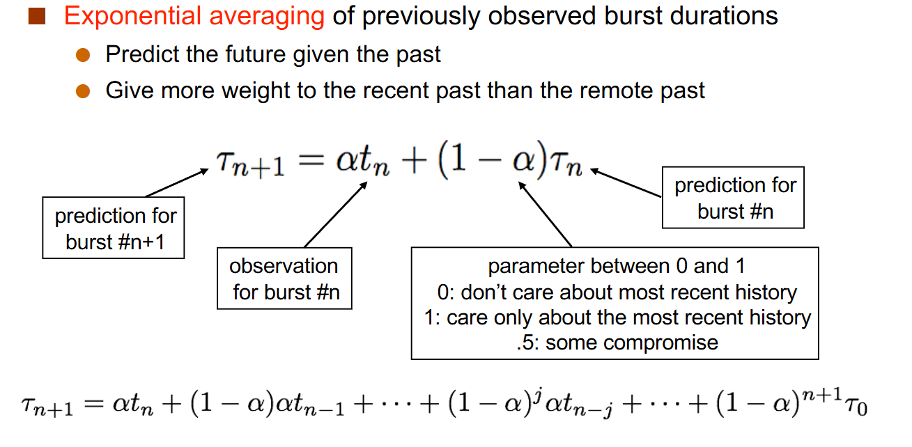
Round-Robin scheduling
preemptive
a time quantum:a fixed time interval(10-100ms)
Unless a process is the only READY process, it never runs for longer than a time quantum before giving control to another ready process
It may run for less than the time quantum if its CPU burst is smaller than the time quantum
Scheduling:
1.Pick the first process from the ready queue
2.Set a timer to interrupt the process after 1 quantum
3.Dispatch the process
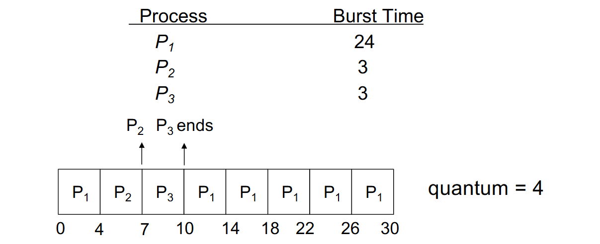
average waiting time worse than SJF,but better response time no starvation,average waiting time is bounded
The right quantum:
short quantum:great response/interactivity but high overhead e.g.Mobile
(quick response for users)
long quantum:poor response but low overhead e.g.Server(process heavy load)
context-switching time:10μs
Priority scheduling
small priority first in Linux,big first in Windows
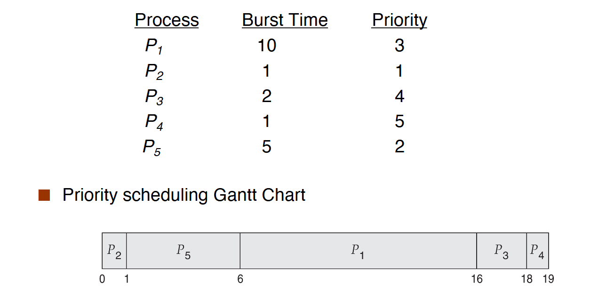
average waiting time = (0 + 1 + 6 + 16 + 18)/5 = 8.2
Priority scheduling / Round-Robin
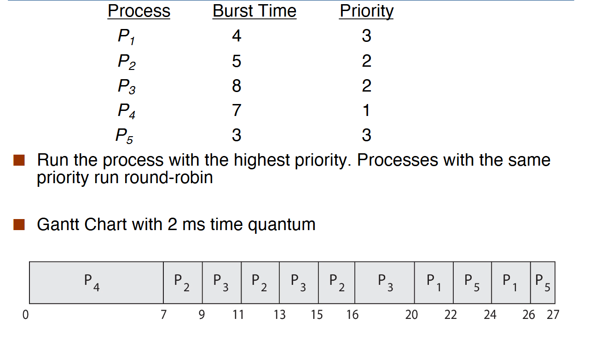
High priority finish before low priority start
Round-robin in the processes of the same priority
problem:low-priority process will not ever run —— starvation
solution:priority aging——increase the priority of a process as it ages
Multilevel Queue Scheduling
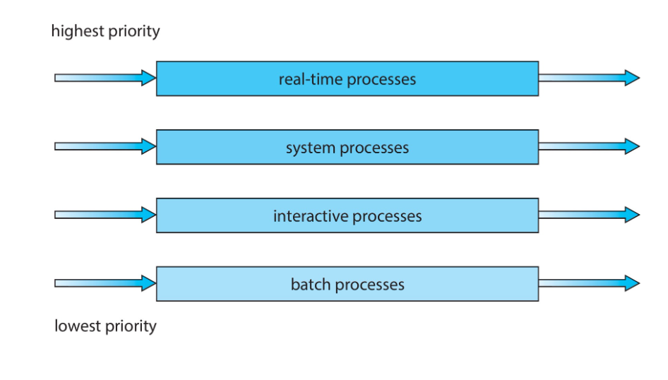
different scheduling algorithms applied in different queues
high-priority could be RR,low-priority could be FCFS
scheduling between the queues:
- preemptive priority scheduling
- time-slicing among queues
process can move among the queues
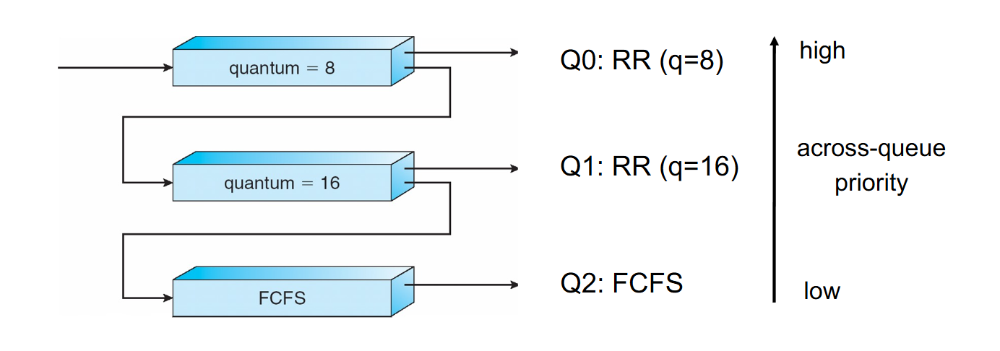
Multilevel Feedback queues
What's a good scheduling algorithm
1.analytical/theoretical results
2.simulation
3.implementation
Multiple-Processor scheduling
Multi-core CPUs
Multi-threaded cores
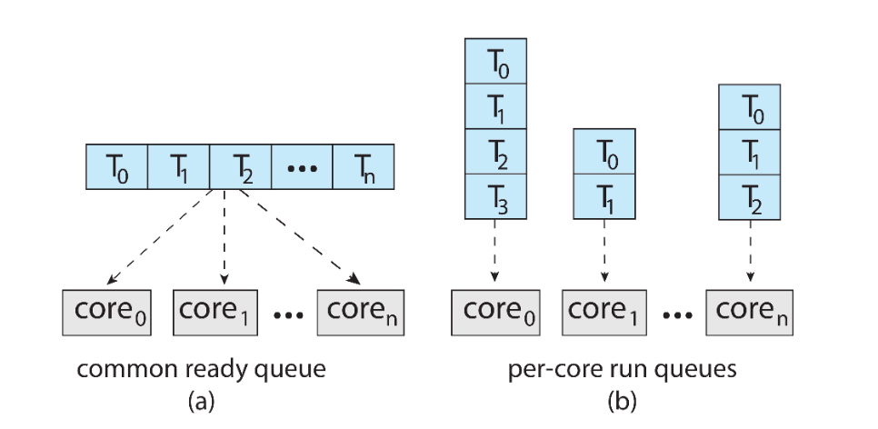
hyperthreading:if one thread has a memory stall,switch to another thread 4-physical core -> 8-logical core
| C | |
|---|---|
1 2 | |
通过提升时间片 counter 提升优先级 priority
O(1)scheduling:
active task array & expired task array
bitmap set to 1 when a task of given priority becomes ready
find the highest priority for which there is a ready task becomes simple
disadvantage:we cannot change the scheduling algorithm
different scheduling for desktop & server:different target —— solidity & response
Inter-Process Communication(IPCs) Week13¶
cooperating processes
- information sharing
- computation speedup
- modularity
- convenience
multiprocess architecture —— browser
Models of IPC
- Shared memory
- Message passing
- Signal
- Pipe
- Socket
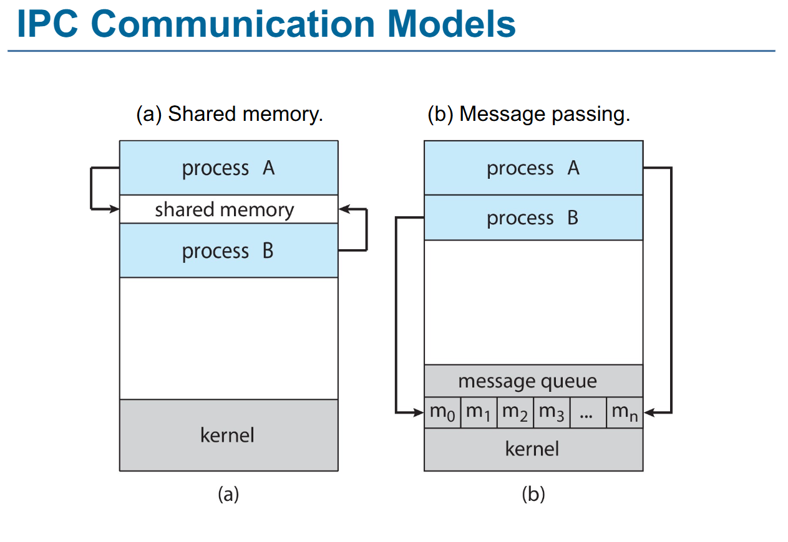
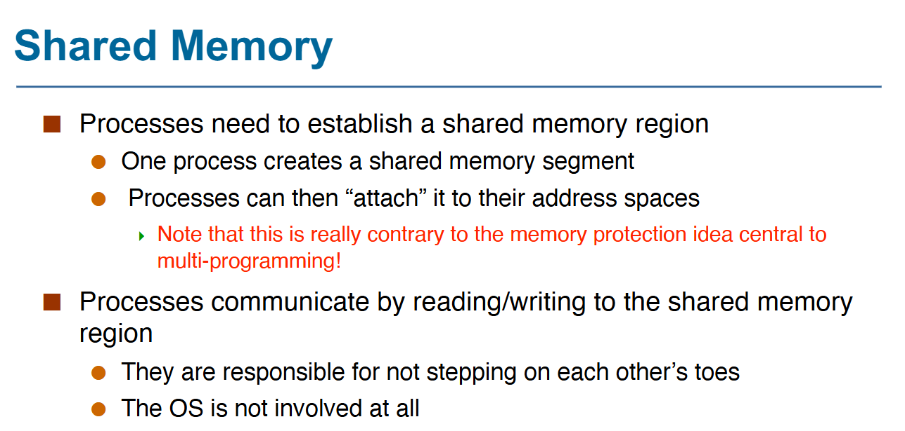
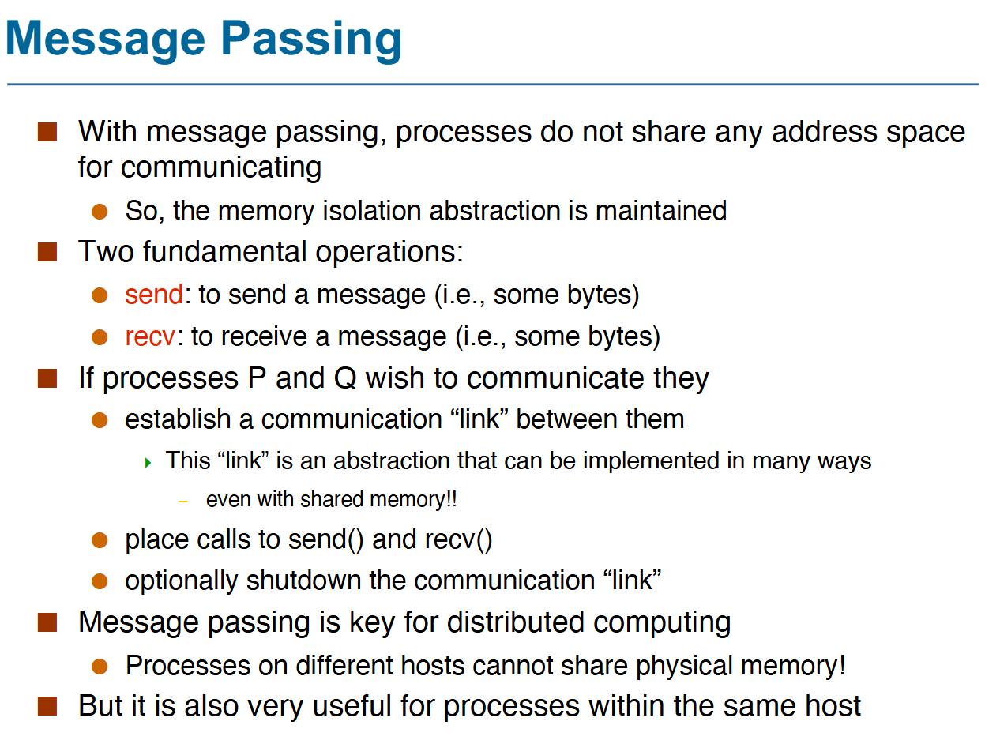
Implementation of message passing
- Shared memory
- Hardware bus
- Network
- Direct/Indirect
- Synchronous/Asynchronous
- Automatic/explicit buffering
Signal
High-level software interrupt:^C
Pipes
Ordinary pipes(anonymous)
cannot be accessed from outside the process that created it.A parent process creates a pipe and uses it to communicate with a child process that it created.
- undirectional
- producers write to one end,consumers read from the other
Named pipes
- bidirectional
- no parent-child relationship
UNIX pipes
- mono-directional(单向)
| Bash | |
|---|---|
1 2 | |
Client-Server Communication
- Socket = ip address + port
- RPC:client stub
- Java RMI:RPC in Java
Threads Week13¶
[Definition]Multiple execution units( 执行单元 ) within a process process:资源分配与保护单元
process is a resource allocator and protection
threads in a process share address space(data,heap,files and signals) & code,but not share pc,registers and stack(variables,function stack)
Advantages
- Creating a thread is cheap
- Context-switching is cheap
- share memory(dont need IPC)
- having concurrent activities in the same address space
- more responsive
- scalability on a multi-core machine
Drawbacks
- Weak isolation(process fails if one thread fails)
Many-to-one model
multi-threading:efficient and low-overhead
cannot take advantage of multi-core
fails if one thread fails
One-to-One model
drain memory(easy to manage and cheap)
commonly used
Many-to-Many model
too complex
Two-Level Model
One-to-One + Many-to-Many
more complex
pthreads join threads
| Text Only | |
|---|---|
1 2 3 4 5 6 7 8 | |
fork()
- duplicate 当前线程
- duplicate 所有线程作为一个进程
exec()
- 替代所有线程
fork() then exec()
- only duplicate current thread( 变成一个 )
Signal
多线程异步信号发送的几种选择：
1. 发送到信号产生的线程
2.发送到当前进程中的所有线程
3.发送到当前进程中的某一个或某几个特定的线程
4.发送到进程中指定接收所有信号的一个特定线程
终止
Cancellation point
立即终止（asynchronous cancellation）
- 如果目标线程执行到了关键部分（critical section）时可能会造成访问资源的紊乱
延迟终止（deferred cancellation）
- 允许线程周期性检查自己是否可以结束
- should I die?should I die?should I die?
process-contention-thread
system-contention-thread(Linux)
In Linux,thread is called a lightweight process(LWP)
| C | |
|---|---|
1 2 3 | |
Linux does not distinguish PCB and TCB
no process task_struct
the info of process is in the first thread's task_struct
PID is the PID of the leading thread
5 threads in a process at most(?)
user thread to kernel thread mapping
one user thread maps to one kernel thread(actually the same thread because of same task_struct)
- user code e.g.printf
- user space stack
- user space context -> pt_regs
- kernel code e.g.write
- kernel space stack(4pages 16KB limited)
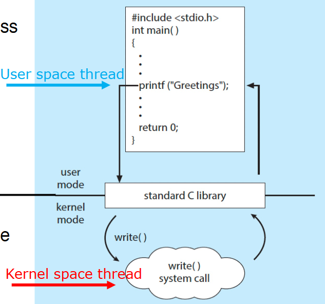
Sychronization Week13 - 15¶
[Motivation]concurrent access to shared data may result in data inconsistency
Race condition: 竞态
several processes or threads access and manipulate the same data concurrently and the outcome depends on the particular order
e.g.Race in kernel:same pid of different processes if both call fork()
pthread_mutex_unlock(&pmutex)
[Definition]Critical Section:the text that cannot be done in parallel
| C | |
|---|---|
1 2 3 4 5 6 | |
ask permission in entry section
release in exit section
single-core system:prevent interrupts
multiple-processor:prevent interrupts is not feasible
preemptive:allows preemption of process when running in kernel mode
non-preemptive:runs until exits kernel mode,blocks,or voluntarily yields CPU
Solution requirements
- Mutual Exclusion( 互斥 MS):only one process can execute in CS
- Progress( 空闲让进 不卡死 ): 当没有线程在执行临界区代码时，必须在申请进入临界区的线程中选择一个线程，允许其执行临界区代码，保证程序执行的进展
- Bounded waiting( 有限等待 ): 从一个进程申请进入 CS ，必须在有限的时间内获得许可，不能无限等待 (prevent starvation)
Peterson's solution:solves two-threads synchronization
- Assume LOAD and STORE are atomic( 原子性：不可打断 )
- Two processes share two variables
boolean flag[2]:whether a process is ready to enter CS
int turn:current process in the CS
| C | |
|---|---|
1 2 3 4 5 6 7 8 9 10 11 12 13 14 15 16 17 18 | |
Problem:
- only avaliable for two threads
- assume LOAD and STORE are atomic
- Instruction reorder is not allowed(commonly happends nowadays)
| C | |
|---|---|
1 2 3 4 5 6 7 8 9 10 | |
Hardware support
Uniprocessors(单处理器):disable interrupts
Problem:code execute without preemption;inefficient
Solution
- Memory Barriers
- Hardware Instructions
- Atomic Variables
Memory Barriers
- Strongly ordered:a memory modification of one process is immediately visible to other processors(stable but complex,lower performance)
- Weakly ordered(high efficiency)
A memory barrier is an instruction that forces any change in memory to be made visible to all the processors.
| C | |
|---|---|
1 2 3 4 5 6 7 8 9 | |
Hardware Instructions
1.Test-and-set
| C | |
|---|---|
1 2 3 4 5 6 7 8 9 10 11 12 13 14 15 16 | |
For single-core:close interrupt before test_set and open it after
For multi-core:lock the bus(总线)
Bounded waiting
| C | |
|---|---|
1 2 3 4 5 6 7 8 9 10 11 12 13 14 15 16 17 | |
2.Compare-and-swap
| C | |
|---|---|
1 2 3 4 5 6 7 8 9 10 11 12 13 14 15 16 17 | |
ARM64:LDXR&SDXR(load-exclusive&store-exclusive)
Atomic Variables
| C | |
|---|---|
1 2 3 4 5 6 | |
Mutex Locks 互斥锁 Semaphore
| C | |
|---|---|
1 2 3 4 5 6 7 8 9 10 11 12 13 14 15 16 | |
T1 busy waits all its CPU time until T0 releases lock
T0 holds the lock,but does not get CPU
Reduce busy waiting - just yield(moving from running to sleeping)
| C | |
|---|---|
1 2 3 4 5 6 7 8 9 10 11 12 13 14 15 16 17 | |
semaphore
- binary semaphore
- counting semaphore
| C | |
|---|---|
1 2 3 4 5 6 7 8 9 10 11 12 13 14 15 16 17 18 19 20 21 | |
No busy waiting on critical section:they are sleeping for waiting ——save CPU time
final exam
choose between Mutex(spinlock) & semaphore:context switch time overhead
Mutex/spinlock
- no blocking
- waste CPU on looping
- good for short CS
Semaphore
- no looping
- context switch is time-consuming
- good for long CS
Question:How to make wait and signal be atomic?
use spinlock
| C | |
|---|---|
1 2 3 4 5 6 7 8 9 | |
LOAD in thread 3 will prohibit STORE in thread 1,causing thread 1 to wait(回滚)
final exam
Question1:18和21行的作用：保护mutex(14-15行spinlock)
Question2:21和22行能否交换：不能，否则会拿着锁sleep导致其他线程busy waiting
Question3:一个线程拿着锁sleep，其他线程会停在什么地方：14行，因而是busy waiting而不是sleep(14到18行也是个critical section)
Deadlock and Starvation
Deadlock:two or more processes are waiting indefinitely for an event that can be caused by only one of the waiting processes
| C | |
|---|---|
1 2 3 4 5 6 7 8 9 | |
Priority inversion:a higher priority process is indirectly preempted by a lower priority task
e.g.three processes,PL,PM,PH
PL holds a lock that was requested by PH,PH is blocked
PM ready and preempted PL
PM and PH inverted
Solution:priority inheritance
temporily assign the highest priority of PH to the process holding the block (PL)
实现：比较新进入的进程的 priority 与持锁进程的 priority
In Linux,down() = wait,up() = signal
| C | |
|---|---|
1 2 3 4 5 6 7 8 9 10 11 | |
no sleep while holding spinlock
POSIX Named Semaphores:another process can access the semaphore by referring to its name
Condition Variables( 仅作了解 )
| C | |
|---|---|
1 | |
| Text Only | |
|---|---|
1 2 3 | |
Classical synchronization problems
必考 ( 考研题 )
- bounded-buffer problem(consumer-producer problem)
| C | |
|---|---|
1 2 3 4 5 6 7 8 9 10 11 12 13 14 15 16 17 18 19 20 21 22 23 24 25 26 27 28 29 30 31 32 33 | |
- readers-writers problem
allow multiple readers to read at the same time
only one single writer can access the shared time
reader and writer cannot coexist
| C | |
|---|---|
1 2 3 4 5 6 7 8 9 10 11 12 13 14 15 16 17 18 19 20 21 22 23 24 25 26 27 28 | |
continuous readers come causes writer to starve
Writer first
- *dining-philosophers problem
multi-resource synchronization
semaphore chopstick[5] initialized to 1
| C | |
|---|---|
1 2 3 4 5 6 7 8 9 10 | |
Deadlocks Week15¶
Compare to starvation:deadlock means all the threads cannot process(starvation:some)
[Definition]a set of blocked processes each holding a resource and waiting to acquire a resource held by another process in the set
Four conditions of deadlock occurence
- mutual exclusion:a resource cannot be shared
- hold and wait
- no preemption
- circular wait
Resource-Allocation Graph
nodes:
P = {P1,...,Pn} set of processes
R = {R1,...,Rm} set of resource type
edges:
request edge Pi -> Rj
assignment edge Rj -> Pi
an example of deadlock , no process can move any longer
no deadlock here
- no cycles -> no deadlock
- only one instance per resource type -> deadlock
- several instances per resource type -> possiblility of deadlock
Handle deadlock
- Prevention:break one of the four conditions
- Avoidance:calculate the safe states
- Deadlock detection and recovery
Prevention¶
- mutual exclusion
cannot prevent if resources are non-sharable - hold and wait
Require process to request all its resources before it begins execution -> starvation - no preemption
Preempted resources are added to the list of resources it waits for -> starvation - circular wait
order the resources
require each process to request resources in increasing order
not avaliable for dynamic requirements and dynamic acquired lock
Avoidance¶
Each process declares a max number of resources it may need(not practical)
Deadlock-avoidance algorithm ensure there can never be a circular-wait condition
[Definition]Safe state:processes are guaranteed to be completed without a deadlock
A safe state ensures no deadlock
Safe sequence
avaliable resources = resources avaliable + resources released by the finished processes
Resources:12
Avaliable is 3
| Max need | Current have | Extra need | |
|---|---|---|---|
| P0 | 10 | 5 | 5 |
| P1 | 4 | 2 | 2 |
| P2 | 9 | 2 | 7 |
Safe sequence:P1 P0 P2
Single instance -> resource-allocation
- claim edge:converts to request edge when a process requests a resource The request can be granted if converting the request edge to an assignment edge does not result in the formation of a cycle
Multiple instance -> banker's algorithm
Deadlock detection¶
Single instance
Multiple instance
Applying Banker's algorithm while operation
Deadlock recovery¶
Option 1
kill one process at a time until the deadlock cycle is eliminated
kill/abort order:
- priority
- how long has computed
- resources the process has used
- resources needed
- how many processes will need to be terminated
- interactive or batch
Option 2
Resource preemption
- select a victim
- rollback
- starvation
Final Review Week16¶
硬件 ¶
Instruction set principles¶
internal storage(e.g.C = A + B)
- stack
Push A
Push B
Add
Pop C - accumulator
Load A
Add B
Store C - register-memory
Load R1,A
Add R3,R1,B
Store R3,C - Load-Store
Load R1,A
Load R2,B
Add R3,R1,R2
Store R3,C
RISC-V ISA¶
Address mode
operand
memory operand:byte addressed,words ...
六种指令类型R I S B J U
Pipelining¶
[Definition]stage/segment depth(number of segments)
[Charactistic]
Bottleneck:longest section -> 设定时钟周期的长度
buffer-register
pass-time
empty-time
[Classes]
Single/Multi function:是否进行多种运算
Static/Dynamic (Multi function): 单一时间是否只能只能执行一个功能
Linear/Nonlinear: 是否有回环 feedback loop,nonlinear 一定有调度
[Implementation]
Performance evaluation¶
Increase the instruction throughput
Throughput(TP)( 注意单位 )
Speedup(Sp): 与对应单周期 CPU 做对比
Sp = m(n >> m) 理想加速比等于切割段数
Efficiency(η)( 注意百分号 )
η -> 1(n -> ∞)
DataPath/Graphically Represent/Control¶
Hazard¶
Structural Hazard
在同一时钟周期内竞争性访问同一物理资源
Solution1:stall(nop)
Solution2:Add more hardware
Data Hazard
重点考察
数据依赖
Solution:Forwarding
Double data hazard
Load-Use:need to stall for one cycle despite forwarding
force control values in ID_EX to 0
prevent update of PC and IF_ID
Schedule of nonlinear pipeline¶
Initial conflict vector -> conflict vector -> state transition graph -> circular queue -> shortest average interval
禁止集F = {1,5,6,8}
初始冲突向量C = 10110001
取0位，并集更新冲突向量
调度表与状态转移图
寻找回环（不一定回到初始冲突向量）
计算shortest average interval
Multiple Issue¶
同一个时钟周期内发射多条指令 increase Instruction-Level Parallelism(ILP)
evaluation:IPC
Static(Compiler)/Dynamic(CPU,编译器仍参与,CPU辅助兜底)
调度类型
调度方式:Superscalar(动态) VLIW(静态固定数量) Superpipeline(子时钟)
注意Superscalar VLIW的区别
VLIW对某一指令同时取值译码，只在EX阶段分开
Exceptions and interrupts¶
Exception:arise from CPU
Interrupt:from external I/O
Exception -> control hazard/mispredicted branch
Software-Hardware Interface¶
软硬协同
Solution for hazards
Code reordering
Application software
System software - OS
Hardware
软件 ¶
Computer architecture¶
Von-Neumann
Data stored in memory:only bits,no data type
Why Memory Hierarchy work
Temporal/Spatial locality
Introduction¶
[Definition]resource abstractor and resource allocator
How an OS start?
first program:bootloader,then locates and loads the OS kernel into memory
wait for event:syscall interrupt exception
Interrupt:I/O timer
OS operates on privileged instructions
A subset of instructions of every CPU is restricted in usage: only the OS can execute them
User mode & kernel mode
OS(狭义):kernel(Linux)
OS(广义)：user + kernel(Android)
Browser is not a part of an OS
RISCV modes: 三个半
void ProcessEvent(event)
Syscall¶
[Definition]a special kind of trap when a user program need to do something privileged(interface of user and kernel mode)
syscall is not a privileged instruction
context_switch when mode change
pt_regs in per-thread(one-to-one) kernelstack
kernelstack：PCB & thread-info
5 OS services
Structure¶
Syscall¶
syscall number:syscall table index
kernel_entry saves the context
kernel_exit restores
Linkers and loaders¶
static linking
- big file(x100 of dynamic linking)
- independent of the environment(less syscalls)
- no .interp section(loader-path)
- no memory mapping segment(dynamic libraries e.g./libc)
dynamic linking
- small file
- need loader resolve library calls
- can't execute without proper loader
static variable -> .data(int a=5;)初始化
static const -> .rodata(read only)
int b; -> .bss未初始化 filled with 0
.text executable
stack:per thread(threads have different return addr)
heap:per process
Who setups ELF file mapping
Kernel
exec syscall
load_elf_binary
Who setups stack and heap
Kernel
exec syscall
Who setups libraries
Loader(user process)
ld-xxx
Linux:monolithic
Processes¶
[Definition]a unit of resource allocation and protection
PCB(process control block):register content,pid,pc,state,scheduling info(priority),...
new:fork/execve
数进程数量
Why fork() return two values?
it copys two user space context(pt_regs)
child改变值不影响parent
exec 会抹去当前进程的内容（无论是子进程还是父进程）
terminate:exit wait waitpid SIGNAL -> zombie orphan
PCB must be deallocated by its parent
ready queue & waiting queues(wait 对象的数量 )
context switch
1.switch stack(sp)
2.switch pc(ret lr)
must happen in kernel mode:change pc(CPU)
When and where are the kernel context been saved?
- when:cpu_switch_to
- where:cpu_context in PCB
When and where are the user context been saved?(before (kernel)context switch)
context switch in kernel mode
- when:kernel_entry
- pt(process trees)_regs in per_thread kernel stack
Scheduling¶
FCFS,SJF(preemptive & nonpreemptive 不实用 ),RR,priority
Gantt chart
average waiting time/turnaround time
抢占情况下如何计算 average waiting time 大题
IPC¶
shared memory
message passing
各自优缺点
Threads¶
[Definition]Multiple execution units( 执行单元 ) within a process
threads in a process share address space(data,heap,files and signals) & code,but not share pc,registers and stack(variables,function stack)
Advantages
- Creating a thread is cheap
- Context-switching is cheap
- share memory(dont need IPC)
- having concurrent activities in the same address space
- more responsive
- scalability on a multi-core machine
Drawbacks
- Weak isolation(process fails if one thread fails)
One-to-one model
large overhead
fork,execve,SIGNAL,cancellation
multiprocess:pid = leader thread pid
Sychronization¶
Solution requirements
- Mutual Exclusion( 互斥 MS):only one process can execute in CS
- Progress( 空闲让进 不卡死 ): 当没有线程在执行临界区代码时，必须在申请进入临界区的线程中选择一个线程，允许其执行临界区代码，保证程序执行的进展
- Bounded waiting( 有限等待 ): 从一个进程做出进入 CS 的请求，直到该请求允许为止，其他进程允许进入其 CS 的次数有上限 (prevent starvation)
Peterson's solution
Hardware support
Uniprocessors(单处理器):disable interrupts
Problem:code execute without preemption;inefficient
Solution
- *Memory Barriers
- Hardware Instructions(!!!)
- Atomic Variables
Hardware Instructions
1.Test-and-set
2.Compare-and-swap (x86 lock the bus)
Mutex lock/spinlock semaphore¶
busy waiting wastes CPU
多少进程跑多少进程 sleep
Mutex/spinlock
- no blocking
- waste CPU on looping
- good for short CS
Semaphore
- no looping
- context switch is time-consuming
- good for long CS
Question1:18和21行的作用：保护mutex(14-15行spinlock)
Question2:21和22行能否交换：不能，否则会拿着锁sleep导致其他线程busy waiting
Question3:一个线程拿着锁sleep，其他线程会停在什么地方：14行，因而是busy waiting而不是sleep(14到18行也是个critical section)
Priority inversion
synchronization examples¶
考研题练习
Deadlock¶
Four conditions of deadlock occurence
- mutual exclusion:a resource cannot be shared
- hold and wait
- no preemption
- circular wait
prevention: 打破条件
avoidance:计算safe state/resource allocation graph/Banker's algorithm
detection:find circle/Banker's
recovery:kill/preemption